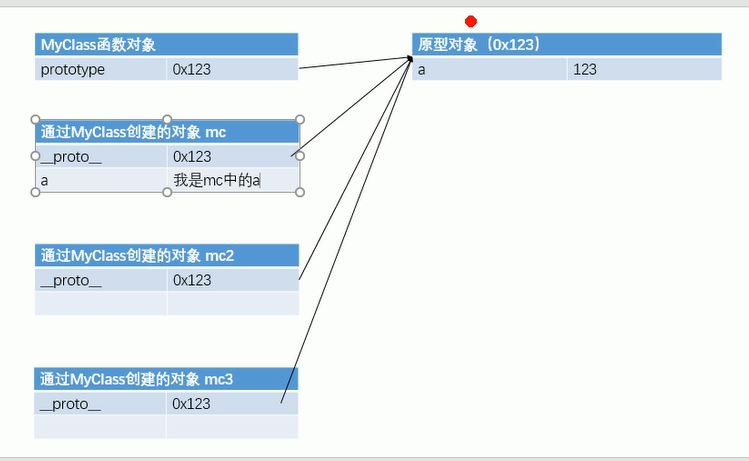
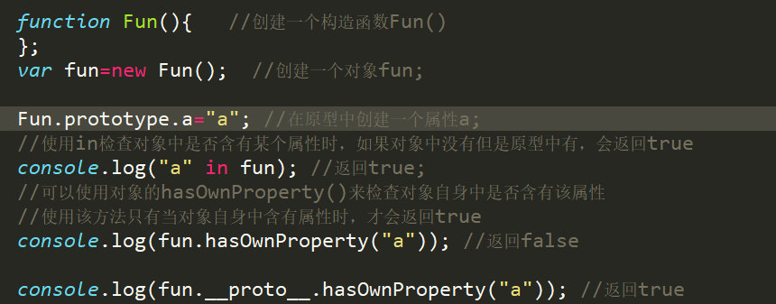

原型prototype
我们所创建的每一个函数，解析器都会向函数中添加一个属性prototype
这个属性对应着一个对象，这个对象就是我们所谓的原型对象
如果函数作为普通函数，调用prototype没有任何作用
当函数作为普通函数调用时，它所创建的对象中都会有一个隐含的属性，
指向该构造函数的原型对象，我们可以通过_ _proto_ _来访问该属性
原型对象就相当于一个公共的区域，所有同一个类的实例都可以访问到这个原型对象，我们可以将对象中共有的内容，统一设置到原型对象中。
当我们访问对象的一个属性或方法时，它会先在对象自身中寻找，如果有则直接使用，如果没有则会去原型对象中寻找，如果找到则直接使用。

使用in检查对象中是否含有某个属性时，如果对象中没有但是原型中有，会返回true
可以使用对象的hasOwnProperty()来检查对象自身中是否含有该属性
使用该方法只有当对象自身中含有属性时，才会返回true
原型对象也是对象，所以它也有原型，
当我们使用一个对象的属性或方法时，会先在自身中寻找，
自身中如果有，则直接使用，
如果没有则去原型对象中寻找，如果原型对象中有则使用，
如果没有则去原型的原型中寻找，直到找到object对象的原型
object对象的原型没有原型，如果在object中依然没有找到，则返回undefined。
